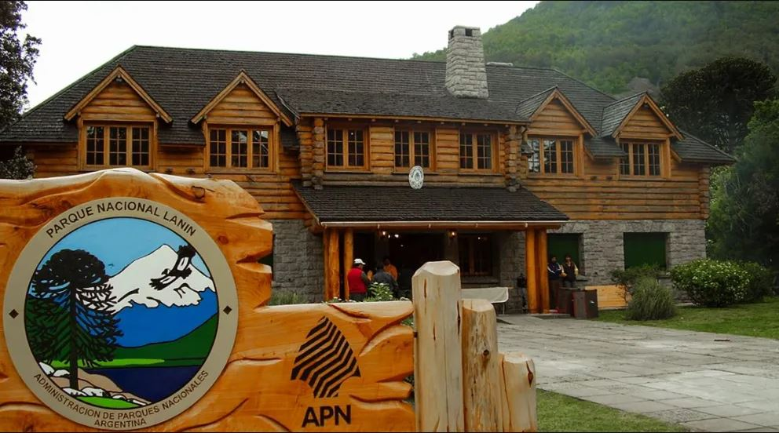

Origen y conservación
El Parque Nacional Lanín protege ecosistemas patagónicos y cordilleranos desde su creación. Su historia refleja esfuerzos de conservación y la colaboración entre comunidades locales y autoridades para preservar el patrimonio natural.
